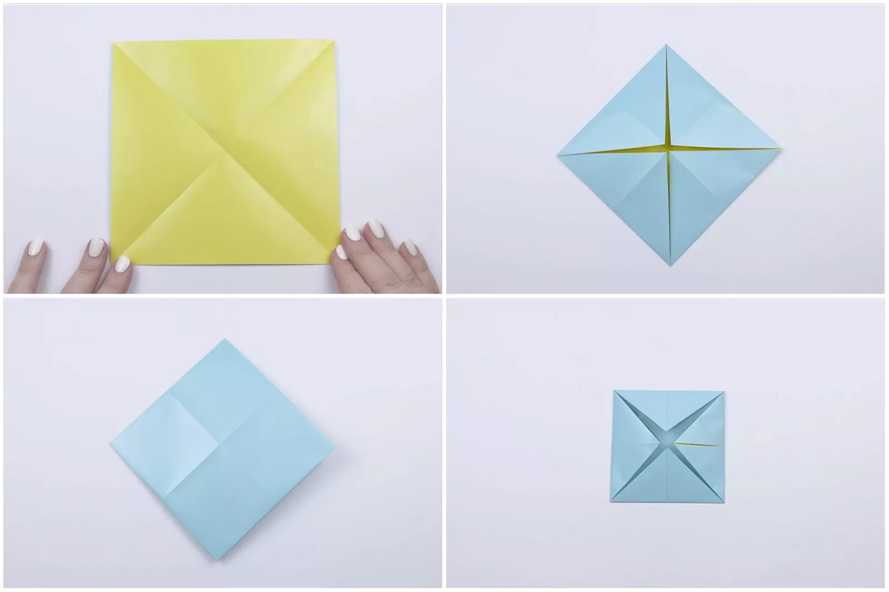
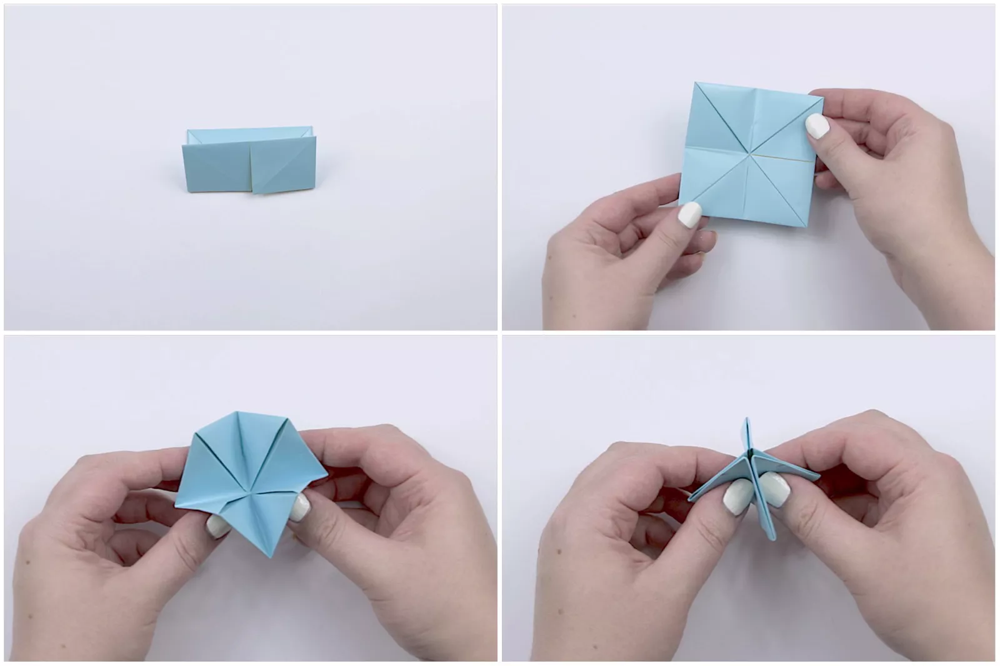
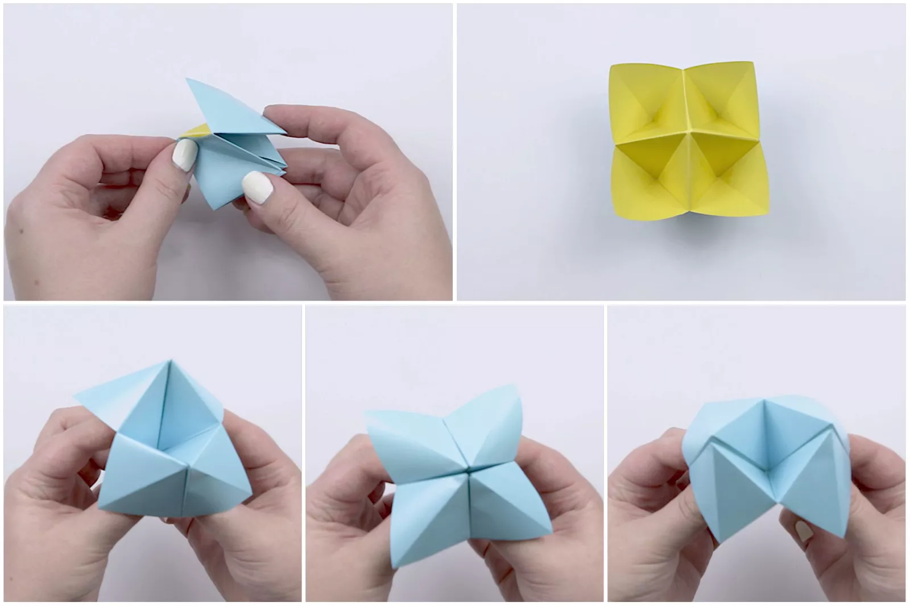
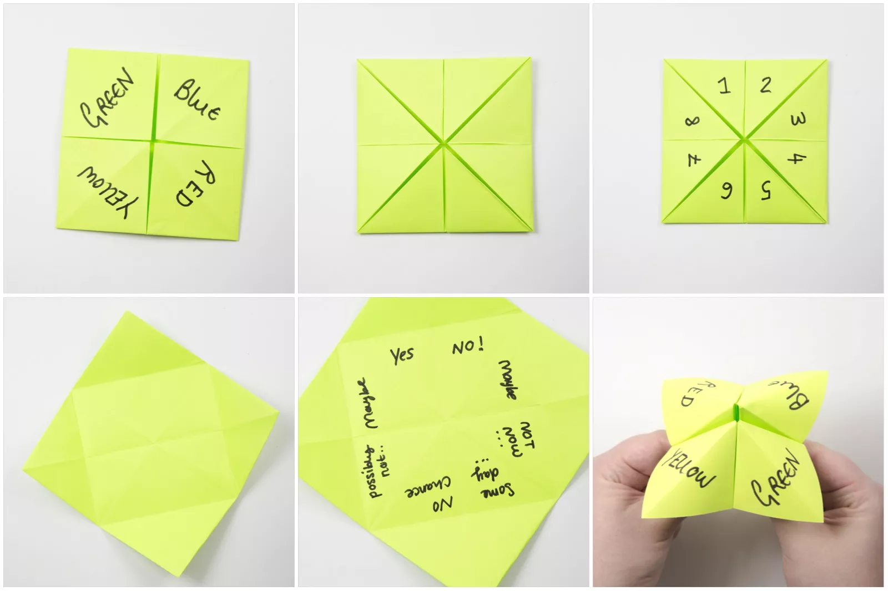
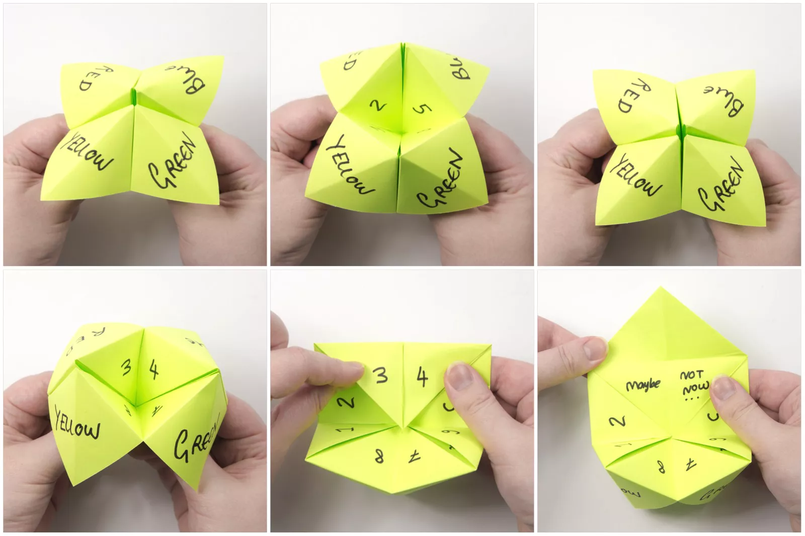

How to Make an Origami Cootie Catcher!
Learn how to make an Origami Cootie Catcher. These fun origami
fortune tellers are easy to make and simple to play with!
Follow this step by step tutorial to find out how!
If you grew up in the 90s it's likely that you remember folding
these origami fortune tellers at school!
Follow this photo tutorial to refresh your memory or learn from
scratch if this trend missed you! You will need one sheet of
square paper, any paper will do, printer paper is perfect.

Start with your paper with its white side facing up (if you have one!).
Start by folding your square sheet of paper in half diagonally
both ways, ending up with a nice X.
Fold all four corners neatly to the central point of the X. Crease well!
Flip the paper over to the other side.
Fold all four corners to the central point!

Fold the paper in half, top to bottom, unfold and fold in half from
left to right and unfold.
Pick up the paper.
Start to push all the points inwards.
Use your fingers to pinch the paper to the center.

Rotate the paper to the side and pull out the flaps!
After a bit of shaping, your origami fortune teller is made!
You can make sure your origami cootie catcher has good movement
by opening and closing it back and forth.

Now we need to prepare the fortune teller! Have your cootie
catcher flattened and with the outer flaps facing up.
Get a pen and write four words, they don't have to be colors.
Alternatively, they could be drawings of animals, such as fish, cat, horse, elephant.
Flip the paper over, and write the numbers 1 through 8 on each of the sections.
Open out the flaps you drew the numbers on. You can write your 'fortunes' in these sections.
In the example, we have used simple outcomes such as 'yes', 'no' and 'maybe'.
You can make these answers more elaborate, or more specific to your situation!
You can also use the upper sections for the answers!

Reasemble the fortune teller, and hold it out, closed, to your friend (or yourself!).
Have them pick a color (or whatever words you used).
You will now count open and close the fortune teller, and alternate the direction you open it.
Open and close the fortune teller as many times as there are letters in the word.
Hold the fortune teller open at the end of your counting.
Next, show it to your friend and ask them to choose a number.
Again open and close the fortune teller, as many times as the number they chose.
Hold out the fortune teller again, asking them to chose a second number.
Open out the paper, and the answer is under the number they chose.

Our Purpose Is To Sustainably Make the Pleasure and Benefits of sports Accessible to the Many.
Copyright-2021 Abdul Haq